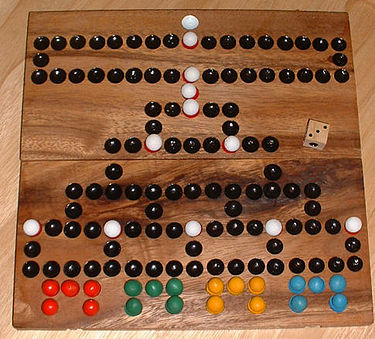

Malefiz
This was a team project, required to pass my CS-2005 course by Mark Hatcher. The application was built using Java language.
In this project we aim to build a classic board game known as 'Malefiz'. An user will play against 3 computer players, where each of them will have a turn to roll a die
and move up the board. Each player will have set amount of tokens and will be given a chance to choose barricades to prevent other players to move up, upon landing on the barricade.